quarto_janela

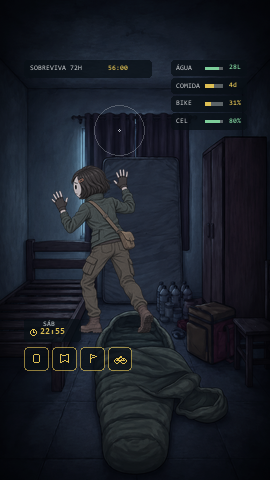
Corpo de costas junto à janela, bagagem em primeiro plano.
Personagem original Mara, cabeça redonda. Catálogo e estilo separados. Estudo visual: poses estáticas, sem voz; não certifica animações.
Os quadros originais são referências locais de análise. Para vê-los em outro computador, extraia novamente o vídeo fornecido.

Corpo de costas junto à janela, bagagem em primeiro plano.

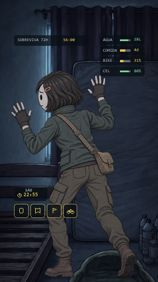
Recorte de costas próximo à janela; parte inferior deliberadamente fora de quadro.

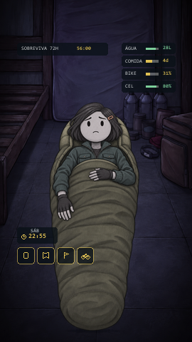
Deitado visto dos pés, cabeça no terço superior e saco na metade inferior.

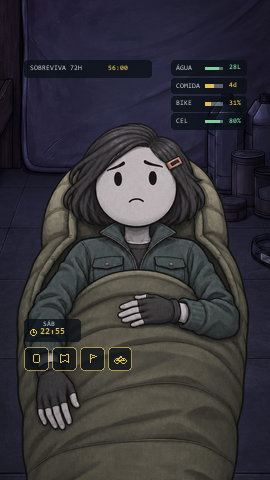
Aproximação ao rosto da pose deitada; não trocar para retrato em pé.

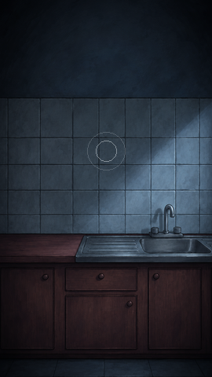
Inserto POV da pia e parede; sem corpo do observador.

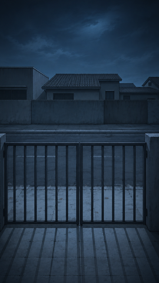
Do interior para rua; portão na metade inferior. Ameaça requer arte própria atrás das barras.

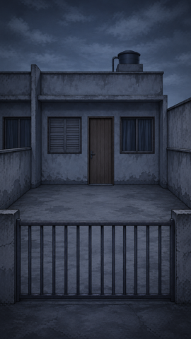
Da rua para a casa; não é zoom da vista interna.

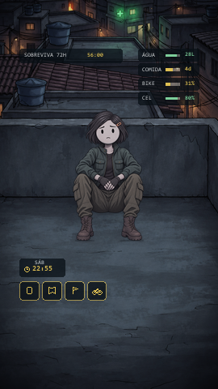
Sentado junto ao parapeito; skyline acima e chão abaixo.

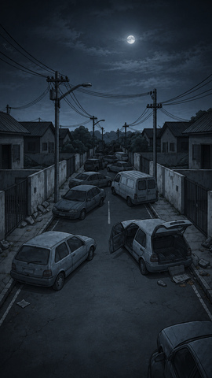
Vista alta da rua; nova perspectiva desenhada.

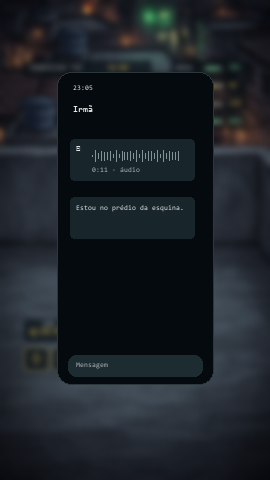
Interface editável sobre a cena da Mara

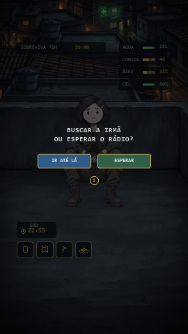
Interface editável sobre a cena da Mara